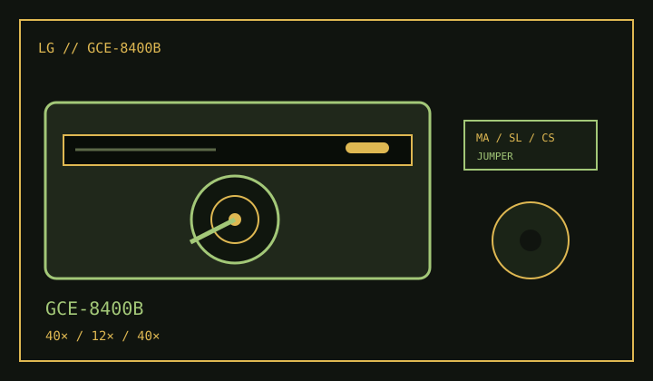

[ CD-R AND CD-RW DRIVES // IDENTIFIED MODEL ]
LG GCE-8400B
Internal E-IDE/ATAPI recorder with 40× CD-R write, 12× CD-RW rewrite and 40× CD read ratings.

IDENTIFICATION: Match the GCE-8400B suffix and firmware label; related LG drives may look similar but use different media ratings.
Documented specifications
| Exact model | LG GCE-8400B |
|---|---|
| CD-R write | Up to 40× |
| CD-RW rewrite | Up to 12× |
| CD read | Up to 40× |
| Supported media | Writes CD-R and CD-RW; reads CD-ROM, CD-DA and supported recordable/audio data discs. Specialized formats may require matching playback or authoring software. |
| Interface / bay | Internal Enhanced-IDE/ATAPI, half-height 5.25-inch tray-loading bay. |
| Host compatibility | Connect to a supported E-IDE/ATAPI channel and use a compatible legacy CD authoring application. Consult the manual's host OS and driver requirements; USB-to-IDE adapters may not expose recording commands. |
| Firmware / jumper | Use firmware identified for GCE-8400B and its OEM revision. The rear block supports the manual's Master/Slave/Cable Select modes; follow its jumper drawing for the host channel. |
Compatibility and preservation
- Actual write rates depend on media certification and supported recording modes; verify all created discs.
- Log firmware, ATAPI controller, jumper setting, media type and read-back results.
- Do not cross-flash GCE family firmware or discard checksummed disc images after a successful burn.
Manufacturer and manual references
- LG GCE-8400B owner's manualModel-specific specifications, media support and installation information.
- LG GCE-8400B owner's manual archiveAlternate copy of the product manual with host and jumper setup.